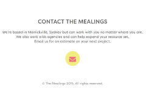
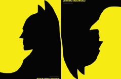
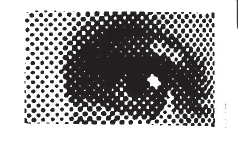
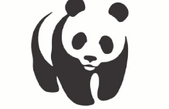
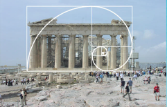

Simplicity
"Hver for sig giver de ikke mening, men sammen giver de et billede"Individuelle komponenter som hver for sig ikke giver mening, men vores hjerne sætter dem automatisk sammen så der kommer en overordnet mening med billedet.
Whitespace
“Alt det der ligger bag indholdet”Det kan være alle farver og baggrundsbilleder, altså alt det der ligger bagindholdet - det er med til at skabe fokus på det essentielle på en sige, f.eks. på reklamen. 
Figure-ground
“Et udtryk for at skelne mellem forgrund og baggrund”Alt grafisk arbejde består af figure og ground, der vil altid være en forgrund og en baggrund i det grafiske arbejde man laver, da der altid vil være noget der er i fokus og noget der er baggrund for det. Måden man opfatter figure-ground på er meget instinktivt, det er noget vi altid har gjort og ligger derfor dybt i vores underbevidsthed. 
Common fate
“Common fate er udtrykket for at elementer der opfører sig på samme måde”Common fate er udtrykket for at elementer der opfører sig på samme måde (f.eks. bevægelse eller retning) opfattes som hørende sammen. Måden man opfatter common fate på er meget instinktivt, det er noget vi altid har gjort og ligger derfor dybt i vores underbevidsthed.

Proximity
“Man stiller tingene tæt på hinanden, så de ses som en helhed i helhed”Hvis man ønsker at folk skal funne forstå at ting høre sammen, er det vigtigt man ikke stiller det for langt fra hinanden, og man ikke ændre formen for meget af de forskellige elementer, men at de skal ligne hinanden. 
Continuity
“Når øjet bliver tvunget til at bevæge sig gennem et objekt og forsætte til at andet”Den der designer, bestemmer hvordan brugeren skal se ens hjemmeside. Elementer der er på linje med hinanden, er set som visuelt.

The rule of thirds
“Det er en teori der bygger på at dele billeder op i 1/3 dele.”Tredjereglen er at man deler billedet ind i 9 lige store felter ved at lade 2 vandrette og 2 lodrette streger gå ned gennem billedet. Ud af det kommer 4 skæringspunkter for stregerne, og disse 4 punkter er der hvor man ligger fokus når man ser billedet. Det kan derfor være en god ide at bruge tredjereglen til portrætter og generelt i kompositionen.

Similarity
Similarity er ligheder i et billede, tekst, hjemmeside osv. Det er når vi har en rød tråd igennem et design. Du kan også bruge det til at hjælpe en person med at aflæse din tekst, billede osv. på en bestemt måde og rækkefølge.
Symmetry og Asymmetry
“Symmetry giver ro, harmoni og overblik. ASymmentry, det modsatte + mere liv”Symmetry giver ro, harmoni og overblik, hvorimod aSymmetry kan virke rodet og vildt, men også give mere liv. Symmetry kan virkelig kedeligt, hvor aSymmetry skaber mere spænding i designet.Elementer der er fundet er typisk af samme slags eller har noget til fælles.
Der findes tre former for Symmetry:
Spejlet Symmetry: Elementer bliver spejlet eller reflekteret rundt om en spejlingsakse.
Rotative Symmetry: Ens elementer som bliver roteret, ofte ud fra et fælles punkt i centrum
Translative Symmetry: Når der er 2 eller flere ens elementer, forskellige steder i kompositionen.

Closure
“Lukketheden giver et overblik over siden eller designet”Lukketheden giver et overblik over siden eller designet, det er en del af den visuelle opfattelse. Lukkethed overlader dele af designet til menneskers ønske om at fuldende ting, og derved vækker det visuel interesse. 
Golden section
“Naturens gyldne spiral”The golden section hedder på dansk den gyldne spiral, og udemere er den kendt som the golden mean og det græske bogstab phi. Den har altid eksisteret i naturen, men selve begrebet blev udvilket senere. 